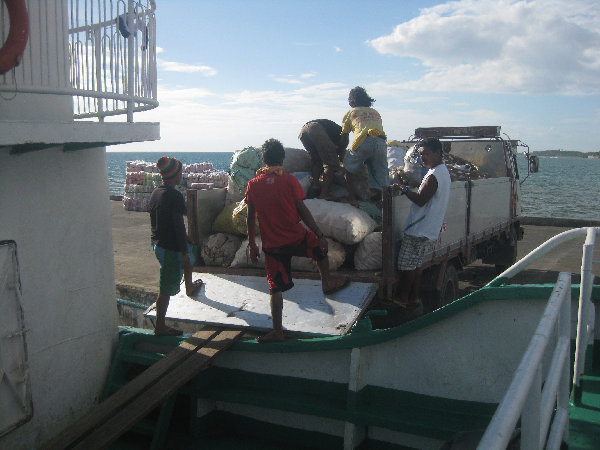

04
Projects

Master's Thesis · 🇻🇳
Gendered perceptions of food security in rice-shrimp farming under salinity intrusion
Winner, UGent Future Proef Award 2025

Summer School · 🇮🇹
Food and Innovation in Rural Transition: the Tuscany Case

Undergraduate Research · 🇵🇭
Value chain analysis of cocoyam in aquatic agricultural systems
Finalist, VSU Phi Delta Outstanding Thesis in Economics and Business 2014
Research and Technical Skills
Research methods
- Mixed-methods research design
- Participatory action research (PAR)
- Constructivist grounded theory (CGT)
- Value chain analysis (VCA)
- SES framework (Ostrom)
- Photovoice · Theory of Change
- Stakeholder and gender analysis
Data collection
- Key informant interviews (KII)
- Focus group discussions (FGD)
- Household surveys
- Participatory mapping
- Multi-stakeholder platforms
- Co-creation processes
Communication and outreach
- Art-science communication
- Training material and extension output development
- Policy briefs for non-academic audiences
- Farmer Business School facilitation
Software and tools
- MAXQDA (intermediate–proficient)
- QGIS (basic–intermediate)
- SPSS · SmartPLS (basic–intermediate)
- Qualtrics (basic)
- MS Office Suite (proficient)